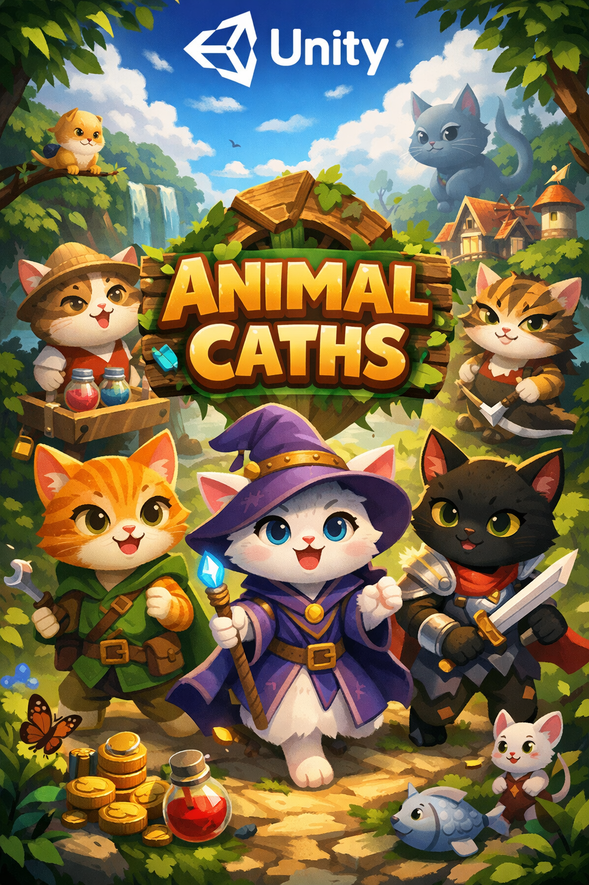
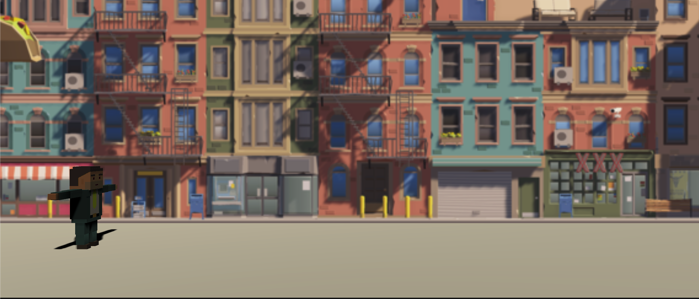
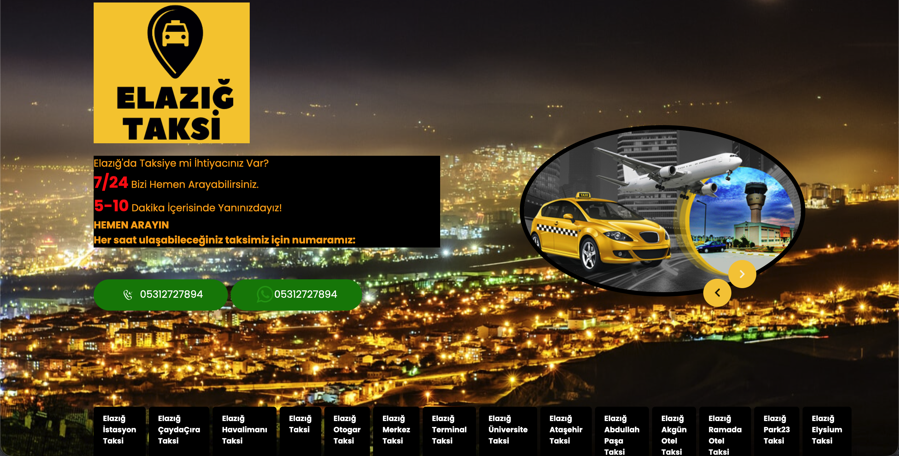
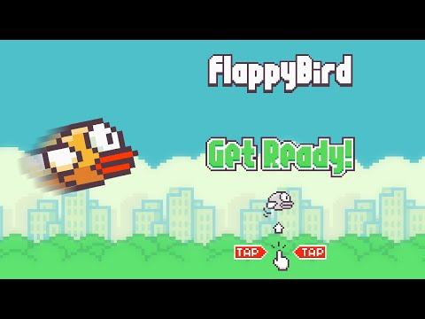

Projelerim

Catch_blocks_game
Unity ile geliştirilmiş, blok yakalama mekaniğine dayalı ve ShaderLab efektleri içeren bir oyun.
GitHub'da İncele

Animal_Caths
Unity Prototype 2 projesi. Oyun fiziği ve çarpışma mekanikleri üzerine kurulu bir çalışma.
GitHub'da İncele

Parkour_Run
Unity Junior Programmer Prototype 3. 3D koşu oyunu mekanikleri ve engellerden kaçınma.
GitHub'da İncele

ElazigVipTaksi
Özel taşımacılık hizmeti için geliştirilmiş web/mobil proje arayüzü ve rezervasyon sistemi.
GitHub'da İncele

Flappy Bird Clone
Efsanevi Flappy Bird oyununun Unity ile geliştirilmiş, fizik tabanlı birebir kopyası.
GitHub'da İncele